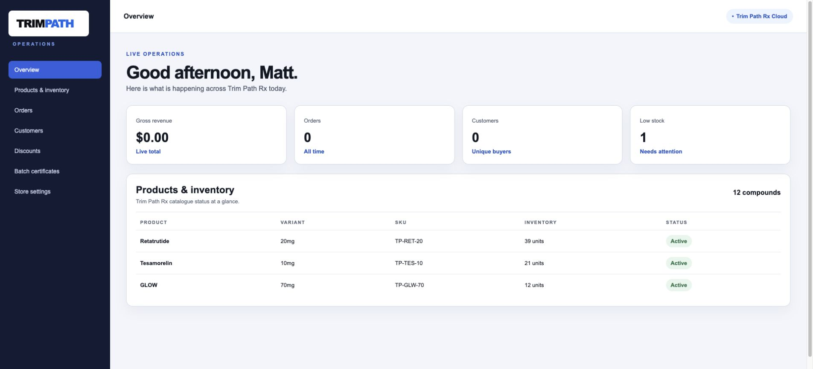

Operate the store
The staff workspace brings the daily store controls into one place.
1. Create the independent Trim Path Rx owner account
Open Operations, select Create the first Trim Path Rx account, and enter your name, email address, and a strong password. Trim Path Rx stores this account independently from every other product or organization.
2. Activate owner access
After creating the first account, enter the one-time owner setup code. This gives that account access to product, order, customer, and store controls.

3. Work from the overview
Review today’s orders, revenue, customer count, low-stock alerts, recent orders, and the top-selling products.
4. Manage daily operations
Use the left menu to open Products & Inventory, Orders, Customers, Discounts, Batch Certificates, or Store Settings. Each section keeps its primary action at the top of the page.
5. Protect live selling
Keep checkout disabled until payment processing and staff access have been verified. Publish catalogue, stock, discount, and batch changes only after reviewing the values shown on screen.